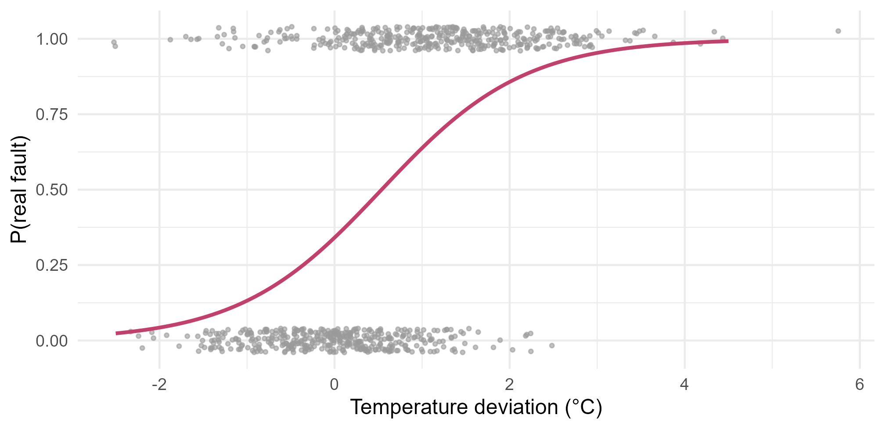
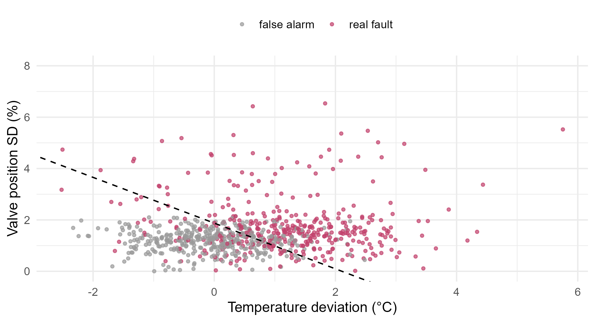

Module 7 · Lesson 4 of 14 Week 107 of 160 About 5–7 hours
Logistic and multinomial regression
Probabilities for two classes, and for many
Model the probability that a reactor alarm is a real fault with logistic regression: odds ratios, predicted probabilities and a straight-line decision boundary. Then diagnose the alarm’s cause among four possibilities with multinomial logistic regression, compute its probabilities by hand with the softmax function, cross-validate it, and find which measurements matter most.
The reactor’s high-temperature alarm goes off a few times a week. Half the time it’s a false alarm: a load change that the controller brings back within minutes. The other half, something is wrong: the cooling has dropped, the feed has surged, or the cooling-water valve is sticking. The engineers labeled 800 past alarms with the cause they found afterwards, and each alarm comes with six measurements from the 10 minutes after it:
| Column | What it is |
|---|---|
temp_dev_C |
reactor temperature above its set point, °C |
pressure_dev_bar |
reactor pressure above normal, bar |
coolant_dt_C |
how much the cooling water warmed up across the jacket, °C |
feed_dev_pct |
feed flow above its set point, % |
valve_pos_pct |
cooling-water valve opening, % |
valve_sd_pct |
how much the valve moved around (its SD over the 10 minutes), % |
Lesson 3’s nearest neighbors misdiagnosed 20% of them. This lesson models the probabilities directly: first, the probability that an alarm is a real fault, with logistic regression, which you met in Module 2; then, the probability of each of the four causes, with its generalization to many classes, multinomial logistic regression.
An alarm system that cries wolf gets ignored. A model that says “78% chance this one’s real, probably the cooling” gets acted on. Let’s build it!
In this lesson you’ll:
- fit a logistic regression and read its coefficients as odds ratios
- predict probabilities, and find a logistic model’s decision boundary
- see what correlated predictors do to the coefficients, but not to the predictions
- fit a multinomial logistic regression with
nnet::multinom() - compute its class probabilities by hand with the softmax function
- cross-validate it, read its confusion matrix, and test which measurements matter
Real fault or false alarm?
For a 0/1 response, logistic regression models the probability p(x) = P(Y = 1 \mid x) through its log-odds, which it takes to be linear in the predictors:
\log \frac{p(x)}{1 - p(x)} = \beta_0 + \beta_1 x_1 + \cdots + \beta_p x_p, \qquad p(x) = \frac{e^{\beta_0 + \beta_1 x_1 + \cdots}}{1 + e^{\beta_0 + \beta_1 x_1 + \cdots}} .
A one-unit increase in x_j adds \beta_j to the log-odds, which multiplies the odds by e^{\beta_j}, the odds ratio. The coefficients are estimated by maximum likelihood, with glm(..., family = binomial).
The setup code reads the alarms, makes “normal” the first level of cause, and adds a 0/1 column fault: 1 for a real fault, 0 for a false alarm.
Your turn. Fit a logistic regression of fault on the temperature deviation alone, and find the odds ratio for each extra degree.
Logistic regression is family = binomial.
fit1 <- glm(fault ~ temp_dev_C, family = binomial, data = faults)
exp(coef(fit1))An odds ratio of 3.41: each extra degree above the set point multiplies the odds that the alarm is real by 3.4. At the set point itself, the odds are 0.52 (the exponentiated intercept), a probability of 0.52/1.52 = 34\%. An odds ratio isn’t a ratio of probabilities: going from odds of 0.52 to 1.76 (one degree higher) moves the probability from 34% to 64%, but the same factor moves 90% only to 97%.
fit1 <- glm(fault ~ temp_dev_C, family = binomial, data = faults)
g <- data.frame(temp_dev_C = seq(-2.5, 4.5, by = 0.05))
g$p <- predict(fit1, g, type = "response")
ggplot(faults, aes(temp_dev_C, fault)) +
geom_jitter(height = 0.04, width = 0, color = "grey60", size = 0.8, alpha = 0.6) +
geom_line(data = g, aes(y = p), color = "#C2416C", linewidth = 1) +
labs(x = "Temperature deviation (°C)", y = "P(real fault)") +
theme_minimal(base_size = 12)
Predicted probabilities and the decision boundary
Temperature alone leaves a lot of overlap. A sticking valve announces itself by the valve’s restlessness, so the valve’s SD should help.
Your turn. Fit fault ~ temp_dev_C + valve_sd_pct, and predict the probability of a real fault for the first three alarms.
type = "response" gives probabilities. The default, type = "link", gives log-odds.
fit2 <- glm(fault ~ temp_dev_C + valve_sd_pct, family = binomial, data = faults)
predict(fit2, faults[1:3, ], type = "response")0.78, 0.95 and 0.18. Alarm A001 (a loss of cooling, as Lesson 3 found the hard way) is probably real, at 78%. The usual rule turns a probability into a class at 0.5, but the cut-off is a choice: if a missed fault costs much more than a false alarm, it should be lower. Lesson 6 is about choosing it.
The decision boundary is where p(x) = 0.5, which is where the log-odds are 0: \beta_0 + \beta_1 x_1 + \beta_2 x_2 = 0. That’s a straight line. Logistic regression is a linear classifier: however curved its probability surface, the boundary between its classes is a straight line (a plane, in more dimensions).
Your turn. Solve \beta_0 + \beta_1 \cdot \text{temp} + \beta_2 \cdot \text{valve SD} = 0 for the valve SD, and find the boundary line’s intercept and slope.
valve SD = -\beta_0/\beta_2 - (\beta_1/\beta_2)\,temp. The slope uses \beta_1, which is b[[2]].
b <- coef(glm(fault ~ temp_dev_C + valve_sd_pct, family = binomial, data = faults))
c(intercept = -b[[1]] / b[[3]], slope = -b[[2]] / b[[3]])The boundary is valve SD = 1.88 - 0.89 \times temperature deviation. At the set point, a valve SD above 1.88% tips the call to “real fault”; at 1 °C above it, 0.99% is enough. The two measurements trade off against each other along a straight line, shown below.
b <- coef(glm(fault ~ temp_dev_C + valve_sd_pct, family = binomial, data = faults))
ggplot(faults, aes(temp_dev_C, valve_sd_pct, color = factor(fault, labels = c("false alarm", "real fault")))) +
geom_point(size = 1, alpha = 0.7) +
geom_abline(intercept = -b[1] / b[3], slope = -b[2] / b[3], linetype = "dashed") +
scale_color_manual(values = c("grey60", "#C2416C"), name = NULL) +
coord_cartesian(ylim = c(0, 8)) +
labs(x = "Temperature deviation (°C)", y = "Valve position SD (%)") +
theme_minimal(base_size = 12) + theme(legend.position = "top")
All six measurements
Your turn. Fit the logistic regression with all six measurements, and look at the temperature and pressure rows of the coefficient table.
The response is the 0/1 column fault.
fit6 <- glm(reformulate(vars, response = "fault"), family = binomial, data = faults)
round(summary(fit6)$coefficients[c("temp_dev_C", "pressure_dev_bar"), ], 3)Temperature is strongly significant, with a coefficient of 1.11 and a z of 5.2. Pressure’s coefficient is -0.10 with a standard error of 2.57, and a p-value of 0.97: on its own, pressure is a decent predictor, but it adds nothing once temperature is known. The two are correlated at 0.87 within every class (a hotter reactor has a higher vapor pressure), so the model can’t tell their effects apart. This is Module 2’s multicollinearity: coefficients that are unstable and hard to interpret, while the predictions are fine. For prediction, it’s mostly harmless. For inference, it means “pressure doesn’t matter” is the wrong conclusion.
Your turn. Compare the 10-fold CV error rates of the two-measurement and six-measurement models, classifying an alarm as real when \hat p > 0.5.
Classify as a real fault when the probability is over 0.5.
cv_glm <- function(formula) {
p <- numeric(nrow(faults))
for (j in 1:10) {
fit <- glm(formula, family = binomial, data = faults[fold != j, ])
p[fold == j] <- predict(fit, faults[fold == j, ], type = "response")
}
mean((p > 0.5) != faults$fault)
}
c(two = cv_glm(fault ~ temp_dev_C + valve_sd_pct), six = cv_glm(reformulate(vars, "fault")))21.4% wrong with two measurements, 18.6% with six. The feed deviation and the valve position, both strongly significant in the six-measurement model, catch faults that the temperature and the valve’s SD miss.
Multinomial logistic regression
Knowing that an alarm is real isn’t enough: the operator needs to know what to do, and the response to a cooling loss (open the valve, cut the feed) is different from the response to a sticking valve (switch to manual). With K classes, multinomial logistic regression picks one class as the baseline (here, “normal”) and models the log-odds of each other class against it, each with its own coefficients:
\log \frac{P(Y = k \mid x)}{P(Y = \text{normal} \mid x)} = \beta_{k0} + \beta_{k1} x_1 + \cdots + \beta_{kp} x_p, \qquad k = 1, \ldots, K - 1 .
That’s K - 1 logistic regressions, fitted together so that the probabilities add up to 1. In R, nnet::multinom() fits it. (The function is in the nnet package because the model is a neural network with no hidden layer, as Lesson 11 shows.)
Your turn. Fit the multinomial model of cause on all six measurements, and find the odds ratio, for “cooling loss” against “normal”, for each extra degree of coolant temperature rise.
The coefficient is in the row "cooling_loss" and the column "coolant_dt_C".
mn <- nnet::multinom(reformulate(vars, response = "cause"), data = faults, trace = FALSE)
round(coef(mn), 3)
exp(coef(mn)["cooling_loss", "coolant_dt_C"])The coefficient matrix has 3 rows (one per cause, against “normal”) and 7 columns. The odds ratio is 0.40: each extra degree of warming across the jacket cuts the odds of “cooling loss” against “normal” by 60%. It makes physical sense: when the cooling water flow drops, the alarm comes with less heat being carried away. For a feed upset, the same coefficient is positive (+1.06): more feed, more heat of reaction, more heat carried away. One measurement, opposite signs for two causes: that’s how the model tells them apart.
The softmax function
The K - 1 log-odds turn into probabilities with the softmax function. Give the baseline a linear predictor of \eta_{\text{normal}} = 0, and each other class its \eta_k = \beta_{k0} + \beta_k^\top x. Then
P(Y = k \mid x) = \frac{e^{\eta_k}}{\sum_{l} e^{\eta_l}} .
Each probability is positive, and they add up to 1. The same function turns a neural network’s outputs into class probabilities, in Lesson 11 and in almost every classifier you’ll meet.
Your turn. Compute alarm A001’s four probabilities by hand from the coefficients, and check them against predict(mn, faults[1, ], type = "probs").
Divide each exp(eta) by the sum of all of them.
mn <- nnet::multinom(reformulate(vars, response = "cause"), data = faults, trace = FALSE)
x1 <- c(1, unlist(faults[1, vars]))
eta <- c(normal = 0, coef(mn) %*% x1)
names(eta)[2:4] <- rownames(coef(mn))
exp(eta) / sum(exp(eta))45% normal, 29% cooling loss, 2% feed upset and 24% sticking valve, exactly what predict() gives. The model would call A001 “normal”, like kNN did, but only just. The probabilities say more than the class: an operator told “45% false alarm, 29% cooling loss, 24% sticking valve” knows to check the cooling water and the valve, not to silence the alarm.
Cross-validating the diagnosis
Your turn. Cross-validate the multinomial model on the same 10 folds, then make the confusion matrix of predicted against actual causes.
Predict the held-out fold, faults[fold == j, ].
pred <- factor(rep(NA, nrow(faults)), levels = levels(faults$cause))
for (j in 1:10) {
fit <- nnet::multinom(reformulate(vars, "cause"), data = faults[fold != j, ], trace = FALSE)
pred[fold == j] <- predict(fit, faults[fold == j, ])
}
print(table(predicted = pred, actual = faults$cause))
mean(pred != faults$cause)20.1% misdiagnosed, the same as kNN. The confusion matrix shows where: 78 real faults are called “normal” (24 cooling losses, 31 feed upsets and 23 sticking valves), and only 52 of the 100 sticking valves are recognized. The sticking valve is the hardest: its average temperature and pressure are close to normal, and its signature, a restless valve, also shows up, more weakly, in the other faults. The next lesson finds a better model for it.
NoteGo deeper: why the baseline doesn’t matter
Choosing “normal” as the baseline only changes how the coefficients are written, not the model. If \beta_k are the coefficients against “normal”, the coefficients of class k against class l are \beta_k - \beta_l, because
\log \frac{P(k \mid x)}{P(l \mid x)} = \log \frac{P(k \mid x)}{P(\text{normal} \mid x)} - \log \frac{P(l \mid x)}{P(\text{normal} \mid x)} .
The fitted probabilities are identical whichever baseline you choose. Some books use the symmetric form, with coefficients for all K classes and a constraint (they sum to zero, say) to make them identifiable. That’s how glmnet fits multinomial models, in Lesson 8, where the penalty makes the symmetric form the natural one. The softmax function is the same either way: adding the same number to every \eta_k doesn’t change e^{\eta_k}/\sum_l e^{\eta_l}.
Challenge round
Challenge 1 · Curved boundaries. Multinomial regression’s boundaries are straight, because its log-odds are linear in x. Add the square of each measurement as a predictor, and cross-validate again.
Squares: ^2. paste0() writes terms like I(temp_dev_C^2).
fq <- reformulate(c(vars, paste0("I(", vars, "^2)")), response = "cause")
pred <- factor(rep(NA, nrow(faults)), levels = levels(faults$cause))
for (j in 1:10) {
fit <- nnet::multinom(fq, data = faults[fold != j, ], trace = FALSE, maxit = 500)
pred[fold == j] <- predict(fit, faults[fold == j, ])
}
mean(pred != faults$cause)16.9%, down from 20.1%. Squared terms make each log-odds a quadratic function of the measurements, so the boundaries can curve. The biggest gain is for the sticking valve, whose measurements are more variable than the other causes’ rather than shifted: a curved boundary can wrap around a spread-out cloud, and a straight one can’t. maxit = 500 gives the optimizer more iterations, because 13 coefficients per cause take longer to converge. The next lesson reaches curved boundaries another way, by modeling each class’s spread directly.
Challenge 2 · Which measurement matters most? A likelihood ratio test compares the full multinomial model with one that drops a measurement: the drop in deviance has a chi-squared distribution with 3 degrees of freedom (one coefficient per non-baseline cause). Test the coolant temperature rise.
Dropping one measurement removes 3 coefficients, one for each cause against “normal”.
full <- nnet::multinom(reformulate(vars, "cause"), data = faults, trace = FALSE)
reduced <- nnet::multinom(reformulate(setdiff(vars, "coolant_dt_C"), "cause"), data = faults, trace = FALSE)
lr <- deviance(reduced) - deviance(full)
c(LR = lr, p = pchisq(lr, df = 3, lower.tail = FALSE))A deviance drop of 231 on 3 degrees of freedom, p \approx 10^{-49}. Dropping each measurement in turn gives a ranking: the valve’s SD (253), the coolant temperature rise (231), the feed deviation (121), the valve position (73), the temperature (28) and the pressure (0.05). In the yes/no model, the coolant rise didn’t matter at all (p = 0.60); for telling the causes apart, it’s the second most important measurement. And pressure adds nothing that temperature doesn’t already say.
Quick quiz
1. A logistic regression coefficient is 1.23. What does a one-unit increase in that predictor do?
Coefficients act on the log-odds. Their effect on the probability depends on where you start.
2. What shape is a logistic regression’s decision boundary between two classes?
The boundary is where the log-odds are zero, and the log-odds are linear in x.
3. Pressure had a p-value of 0.97 in the six-measurement model. What’s the right conclusion?
On its own, pressure predicts faults well. It’s redundant given temperature.
4. With 4 classes and 6 predictors, how many coefficients does a multinomial logistic model have?
3 non-baseline classes, each with an intercept and 6 slopes.
5. What does the softmax function do?
P(k) = e^{\eta_k}/\sum_l e^{\eta_l}.
6. Which cause did the multinomial model diagnose worst?
Only 52 of 100. Its signature, a restless valve, isn’t captured well by a linear model.
Wrap-up
You can now model class probabilities, for two classes or many. Here’s what you’ve learned:
- Logistic regression models the log-odds as linear in the predictors. Its coefficients are log odds ratios: each degree of temperature deviation multiplies the odds of a real fault by 3.4.
- Its decision boundary is linear: for two measurements, valve SD = 1.88 - 0.89 \times temperature deviation.
- Correlated predictors make individual coefficients unstable (pressure’s SE was 2.6) without harming the predictions. The six-measurement model misclassified 18.6% of alarms as real or false.
- Multinomial logistic regression fits K - 1 log-odds against a baseline, and the softmax turns them into probabilities.
- Diagnosing the cause was 20.1% wrong, with the sticking valve hardest. Squared terms, which curve the boundaries, brought it down.
- Likelihood ratio tests rank the measurements: the valve’s SD and the coolant temperature rise matter most for telling the causes apart.
TipPractice in RStudio (optional, about an hour)
Download process_faults.csv into your project’s data-raw/ folder.
- Plot the probabilities. For the multinomial model, plot each alarm’s predicted probability of its true cause, by cause, as box plots. Which cause gets the least confident predictions?
- A different baseline. Refit with “sticking_valve” as the baseline (
relevel()), and check that the predicted probabilities don’t change. How do the coefficients change? - Interactions. Add the interaction
temp_dev_C:valve_sd_pctto the binary model. Is it significant? Does it improve the CV error? - broom. Use
broom::tidy(mn, exponentiate = TRUE, conf.int = TRUE)to get odds ratios with confidence intervals for every cause.
NoteKey words from this lesson
- Logistic regression
- A model for a binary response in which the log-odds of the event are linear in the predictors.
- Log-odds (logit)
- \log\big(p/(1 - p)\big).
- Odds ratio
- The factor by which the odds are multiplied when a predictor increases by one unit, e^{\beta_j}.
- Decision boundary
- The set of inputs where a classifier is undecided between two classes. For logistic regression, a line or plane.
- Linear classifier
- A classifier whose decision boundaries are linear in the inputs.
- Multinomial logistic regression
- The generalization of logistic regression to more than two unordered classes, with the log-odds of each class against a baseline linear in the predictors.
- Softmax function
- The function e^{\eta_k}/\sum_l e^{\eta_l}, which turns linear predictors into class probabilities.
- Confusion matrix
- A table of predicted against actual classes.
NoteWant to read more?
- James, Witten, Hastie and Tibshirani, An Introduction to Statistical Learning (2nd edition), sections 4.1 to 4.3, on logistic regression, including multinomial logistic regression (section 4.3.5).
- Alan Agresti, An Introduction to Categorical Data Analysis (3rd edition, Wiley, 2019), chapter 6, “Multicategory Logit Models”.
- William Venables and Brian Ripley, Modern Applied Statistics with S (4th edition, Springer, 2002), section 7.3, by the authors of
nnet::multinom().